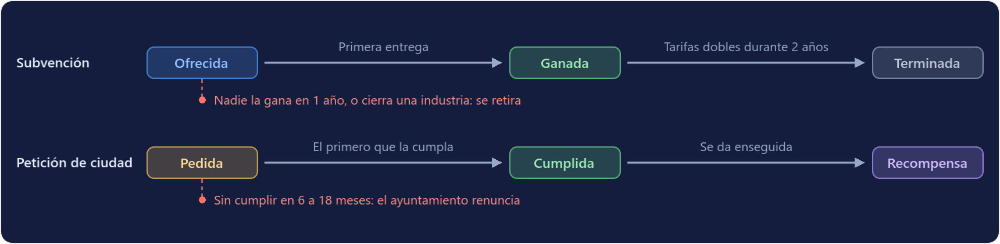

Subvenciones y peticiones
Ofertas que cualquiera puede aprovechar: tarifas dobles y lo que piden los ayuntamientos.
De vez en cuando la junta regional ofrece una subvención y los ayuntamientos piden algo. Objetivos las lista en Oportunidades, y las noticias avisan cuando se ofrece, se gana o se acaba una.
Subvenciones
- Una subvención indica una carga, de dónde sale y adónde va. Sale de una industria que nadie ha servido en 90 días o, si son residuos, de una ciudad de 400 habitantes o más. Va a una industria que la acepte o, para mercancías, alimentos o periódicos, a una ciudad de 400 habitantes o más (1.000 para coches). La ruta mide de 15 a 60 casillas.
- Tu primera entrega en una estación que llegue al destino, cargada en una estación que llegue al origen, la gana. Los transbordos por el camino cuentan: lo que importa es dónde se cargó la carga por primera vez.
- A partir de entonces tus entregas en esa ruta cobran el doble durante 2 años. Cualquier otro en la ruta cobra la tarifa de siempre.
- Una oferta que nadie aprovecha caduca al cabo de un año. Si cierra una industria de cualquiera de los extremos, la oferta se retira, y una subvención ya ganada termina con ella.
- Mientras haya menos de 2 en oferta, cada mes hay un 12% de probabilidad de una nueva.


Peticiones de las ciudades
Un ayuntamiento pide algo que encaje con su ciudad, con un plazo. Una ciudad tiene como mucho una petición, y su ventana la muestra en Peticiones y recompensas; las ciudades más grandes piden más a menudo.
| Petición | Quién la pide | Se cumple con | Recompensa, una de |
|---|---|---|---|
| Enlace de pasajeros | Ciudades de 700 habitantes o más | Los primeros pasajeros llevados a una ciudad a entre 15 y 60 casillas, de 200 habitantes o más, que nadie conecte todavía. Entre dos ciudades de 1.500 o más, el ayuntamiento puede quererlo en tren. | un año de derechos exclusivos de transporte +25 de valoración del ayuntamiento |
| Suministro | Ciudades de 400 habitantes o más | Mercancías o alimentos (la petición indica cuál) entregados en la ciudad: unas 2,5 unidades al mes por cada 100 habitantes, durante su plazo. | seis meses de crecimiento rápido una ayuda de 50.000 $ |
| Visitantes | Ciudades con una atracción | Pasajeros entregados en una estación que llegue a la atracción: unos 4 al mes por cada 100 habitantes, durante su plazo. | una ayuda de 50.000 $ +25 de valoración del ayuntamiento |
| Servicio | Ciudades donde alguien tiene una estación | Todas tus estaciones de la ciudad con una valoración del 60% o más durante 12 finales de mes seguidos. Un final de mes que no llegue reinicia la cuenta. | un año de estaciones y depósitos a mitad de precio +25 de valoración del ayuntamiento |
- Una petición da de 6 a 18 meses, una de servicio 18. Puede haber hasta 2 abiertas a la vez en el mapa, y cada mes hay un 12% de probabilidad de una nueva.
- El progreso de cada empresa cuenta por separado, y gana la primera que llega. La recompensa se fija cuando el ayuntamiento hace la petición, y se muestra con ella.
- La ventana Objetivos muestra cuánto llevas tú y cuánto lleva el mejor rival, con un botón que muestra la ciudad.
Recompensas
- +25 en tu valoración del ayuntamiento.
- Una ayuda de 50.000 $.
- Derechos exclusivos de transporte durante un año: las estaciones de las demás empresas en la ciudad no reciben pasajeros ni carga nuevos, aunque las entregas en la ciudad siguen pagando. Terminan antes si quien los tiene quiebra.
- Estaciones y depósitos a mitad de precio durante un año, en cualquier sitio donde esa ciudad sea la más cercana a menos de 18 casillas.
- Un auge de la construcción: la ciudad crece rápido durante 180 días, como cuando financias edificios.